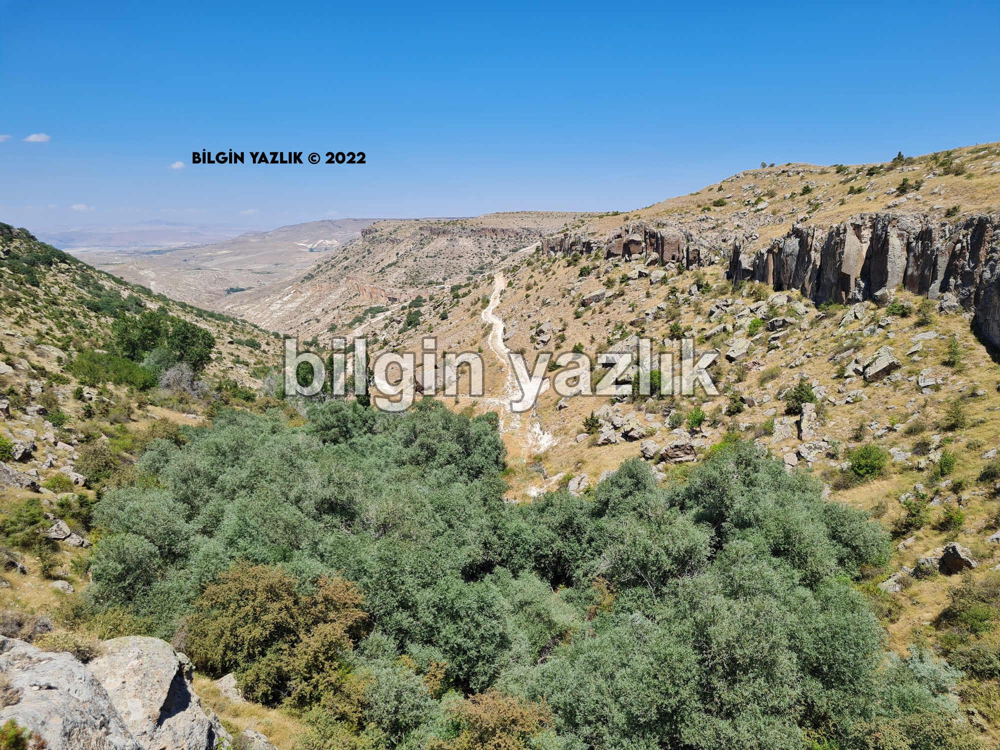
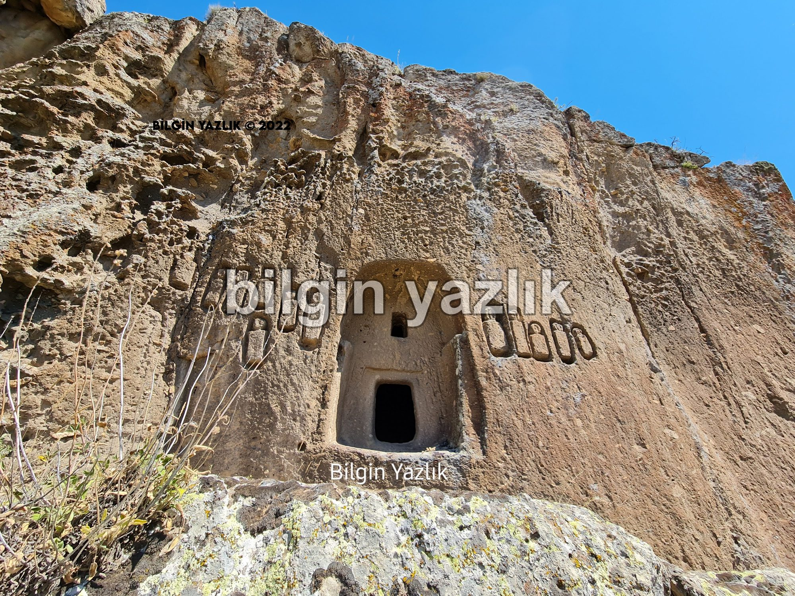
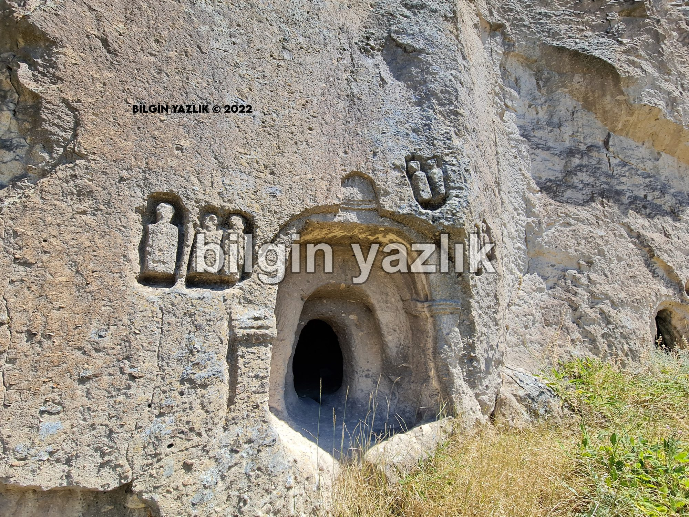
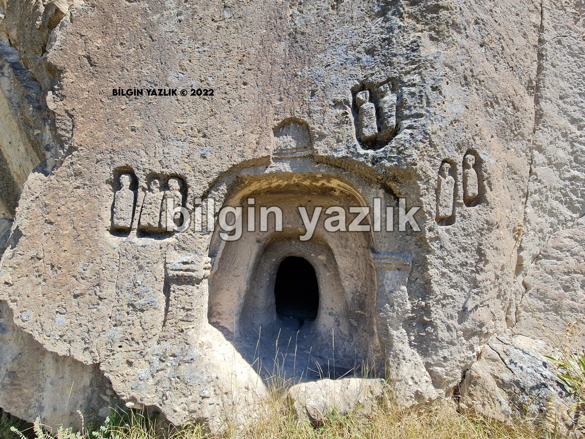
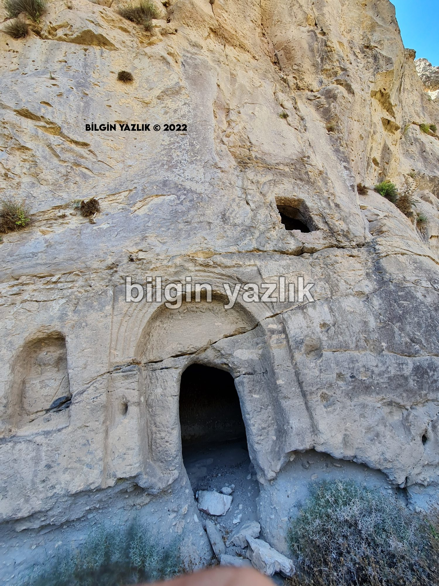
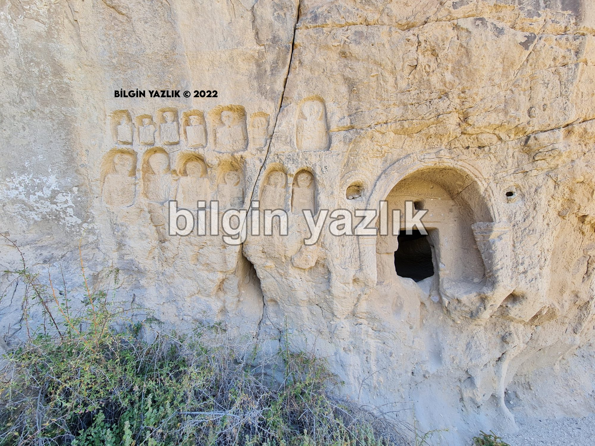
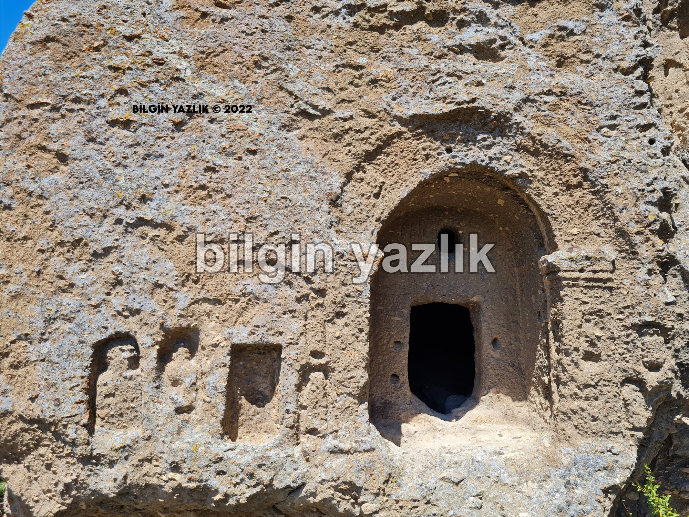
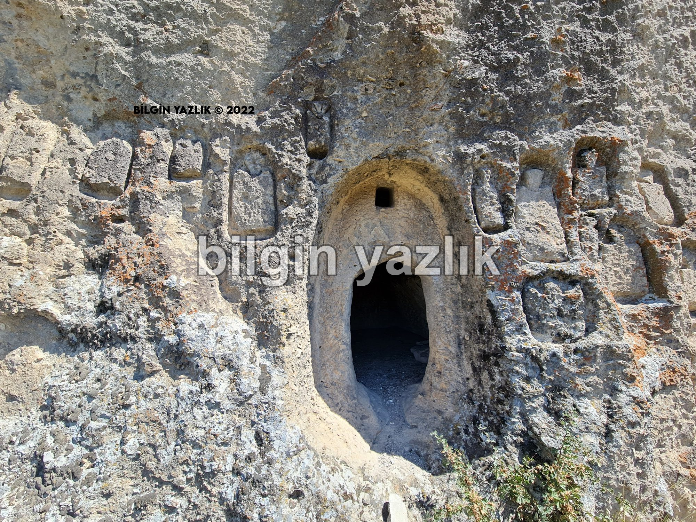

Kapadokya · 22 Ağustos 2022
Kurt Deresi Nekropolü
Nevşehir ili Ürgüp ilçesi Karlık köyünün yaklaşık 2 km batısında yer alan Kurt Deresi Nekropolü duvarlarında insan silüetleri resmedilmiş kaya oyma mezarları ile ilgi çekici bir tarihsel alan özelliği gösteriyor.
Bölgenin doğusunda ise bir yerleşim yeri bulunduğuna dair kalıntılar yer alıyor.









Bu yazı taliyol arşivinden taşınmıştır. · özgün kayıt